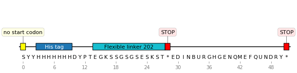
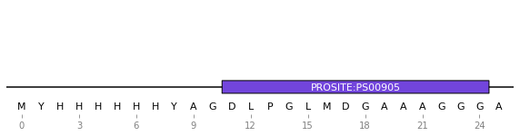

Minotaor


Work in progress
Minotaor is an amino acid sequence annotator for quickly identifying common protein tags and linkers in an ORF. Additionally, it can flag peptide motifs that are known to cause problems during translation. It uses Biopython.
Background
In the PROSITE nomenclature, a sequence motif is a description of the occurrence of amino acids (signature, fingerprint), and can be either a pattern or a profile. A pattern is a qualitative description of a motif in a regular expression-like syntax. A profile (or weight matrix) is a table of position-specific amino acid weights and gap costs.
Install
pip install minotaor
Usage
import minotaor
from Bio.Seq import Seq
from Bio.SeqRecord import SeqRecord
protein = Seq("SYYHHHHHHDYDIPTTENLYFQG*EDINBURGHGENQMEFQUNDRY*")
protein_record = SeqRecord(protein, id="example", annotations={"molecule_type": "protein"})
protein_record = minotaor.annotate_record(protein_record) # search is case sensitive
Plotting
Plotting requires DNA Features Viewer installed:
graphic_record = minotaor.MinotaorTranslator().translate_record(protein_record)
ax, _ = graphic_record.plot(figure_width=10, strand_in_label_threshold=7)
graphic_record.plot_sequence(ax)

Reference datasets
Minotaor can use custom reference pandas dataframes, specified with seq_dataset. The sequence and name columns are used for search and naming of the motifs. The type column sets the search type, which can be seq for strings or pattern or regexes (regular expressions). This is shown in the below examples of epitope datasets.
Immune Epitope Database
Download and unzip a CSV Metric Export of your choice from the IEDB website, then:
import pandas
iedb_file = 'epitope_full_v3.csv'
iedb = pandas.read_csv(iedb_file, skiprows=1, dtype='str')
iedb.rename(columns={"Epitope IRI": "name", "Description": "sequence"}, inplace=True)
iedb['type'] = 'seq'
# The dataframe can be used as shown above (note: this is a huge dataset):
protein_record = minotaor.annotate_record(protein_record, seq_dataset=iedb)
The epitopes can then be looked up with the link provided as their names. Alternatively, a more informative epitope name can be constructed from the other columns, as shown in the next section.
VDJdb
Download and unzip the latest VDJdb release, then:
import pandas
vdjdb_file = 'vdjdb-YYYY-MM-DD/vdjdb.slim.txt'
vdjdb = pandas.read_csv(vdjdb_file, sep='\t')
# Create a unique subset of the epitopes:
vdjdb_dataset = vdjdb.copy(deep=True)
vdjdb_dataset.drop_duplicates(subset=['antigen.gene'], inplace=True, ignore_index=True)
vdjdb_dataset['sequence'] = vdjdb_dataset['antigen.epitope'] # or 'cdr3' for antibodies
vdjdb_dataset['type'] = 'seq'
vdjdb_dataset['name'] = ['VDJdb epitope ' + str(antigen)
for antigen in vdjdb_dataset['antigen.gene'].to_list()]
protein_record = minotaor.annotate_record(protein_record, seq_dataset=vdjdb_dataset)
The motifs then can be looked up in VDJdb for more details. A similar approach can be used for the McPAS-TCR database.
PROSITE
A function is provided for reading ScanProsite results. Query your sequence with Biopython:
from Bio.ExPASy import ScanProsite
my_seq = 'MYHHHHHHYAGDLPGLMDGAAAGGGA' # cannot contain '*'
scanprosite_handle = ScanProsite.scan(seq=my_seq, mirror='https://prosite.expasy.org/', output='xml')
scanprosite_record = ScanProsite.read(scanprosite_handle)
protein_record = SeqRecord(Seq(my_seq), id="my_seq", annotations={"molecule_type": "protein"})
protein_record = minotaor.add_scanprosite_results(protein_record, scanprosite_record)

Conversion
Convert between PROSITE and regex formats:
regex = minotaor.convert_prosite_to_regex("<A-[GV]-{PR}-[FYW](2)-{P}(4)-x-x(8)>.")
regex
# '^A[GV][^PR][FYW]{2}[^P]{4}[^\\*][^\\*]{8}$'
minotaor.convert_regex_to_prosite(regex)
# '<A-[GV]-{PR}-[FYW](2)-{P}(4)-x-x(8)>.'
Given a DNA sequence, return amino acid sequences that may contain it:
bsmbi_site = "CGTCTC"
print(minotaor.convert_dna_to_aa_pattern(bsmbi_site))
# ['RL', '[DATRSICYNLFPHVG]V[S]', '[SPAT]S[RPLQH]', 'ET', '[MAT*RSPKLEVQGW]R[R]', '[G*R]D[DAVEG]']
Returns a regex for each of the 6 translation frames. Note that the search with regex is case sensitive.
Versioning
Minotaor uses the semantic versioning scheme.
License = MIT
Minotaor is free software, which means the users have the freedom to run, copy, distribute, study, change and improve the software.
Minotaor was written at the Edinburgh Genome Foundry by Peter Vegh and is released under the MIT license.